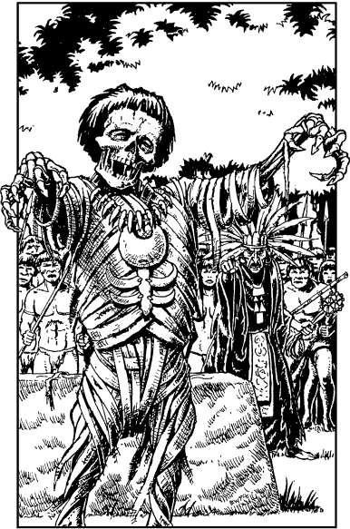

51
As you draw closer to the sound, you detect that it is a strange vocal chant, a low ululation that sends shivers coursing down your back. You feel that you are very close to the source when suddenly, through the trees ahead, you see a clearing where a large crowd of tribal natives are gathered.
From the cover of the bordering undergrowth you watch a crow-faced man in tattered black robes standing at the centre of this crowd. He is uttering the chilling chant. Before him, on a stone altar, there lies the decaying remains of a body encased in rotting swathings. Your Kai senses reveal to you that the robed man is a Kitaezi Shaman, an evil necromancer who has enslaved these natives with his power. You sense also that it is the same power that was used to create the creature that attacked and slew your horse last night.
Suddenly the terrible sound of the chant ceases and the Shaman shrieks with rage. He points to where you are hiding and your heart sinks. He has detected your presence. He pounds the altar with his fist and to your horror, you see the decaying remains begin to shift and stir into life. The Shaman intones a dark spell and the grisly corpse leaves the altar and comes stalking towards you, its fleshless arms outstretched. Waves of psychic energy buffet your mind. They paralyse you and keep you from escaping. You summon your psychic Kai defences and break this powerful spell, yet it is now too late to turn and run from the Shaman’s horror—it is almost upon you. Instinctively you reach to your satchel for you sense that the Moonstone is all that can save you from this creature’s ghastly embrace. You pull open the flap to reveal the magical stone and the effect is devastating.
